中山医院赴武汉医疗队领队：不希望我的队员说太多豪言壮语
原文链接 备份链接 摘要：截至2月17日，全国已有3.2万余名医护人员支援湖北，支持湖北实现“应收尽收、应治尽治”。2月7日，其中一支医疗队的领队、复旦大学附属中山医院副院长朱畴文率领的136人队伍奉调入鄂，一天后接管了武汉大学人民医院东 …

每天一条独家原创视频
大年初一，首批驰援湖北的医疗队之一
湖南株洲市中心医院的15人医疗队抵达黄冈。
发现状况令人崩溃：
黄冈当地医护人员天天连轴转，
已经支撑不下去，
防控不到位，医护人员陆续被感染，
床位紧张，住不进救治点的病人和家属大哭，
防护物资和生活物资都奇缺……
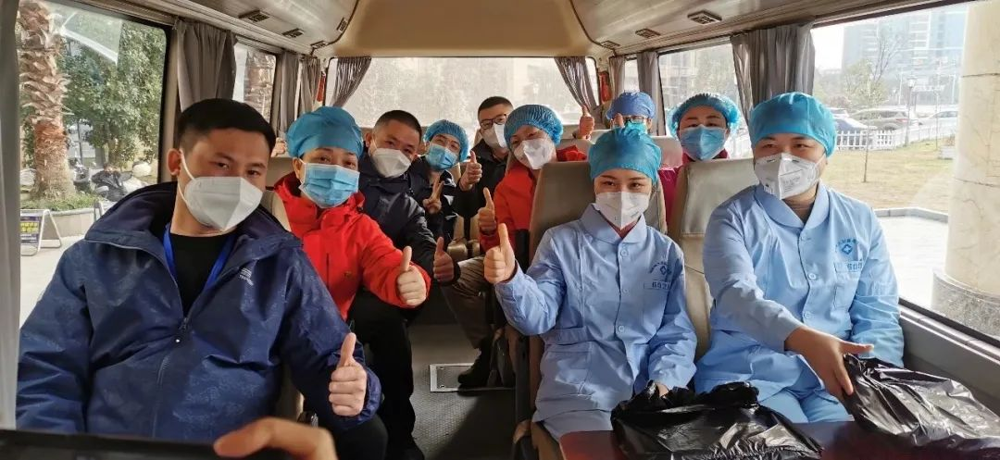
株洲市中心医院医疗队部分队员
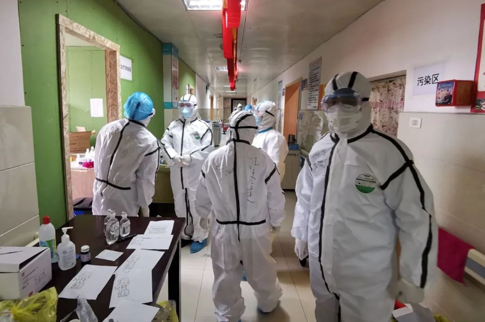
医疗队在黄冈龙王山救治点
株洲市中心医院医疗队
先是接手了3个条件艰苦的临时救治点，
1月30号，入驻黄冈“小汤山”——
大别山区域医疗中心，
和其他医疗队同事一起负责了58张床位，
三周里照顾20多位病人出院。
15人的医疗队，
护理组一半以上是男护士，
一个月来，实现了全员“零感染”。
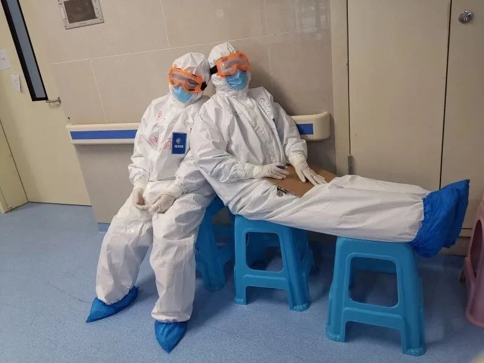
黄冈本来是武汉之外疫情的第二重灾区，
截至2月25日7时，
黄冈新冠肺炎患者治愈出院累计达1659人，
占确诊病例总量57.12%。

株洲市中心医院医疗队主管护师付艳萍
主管护师付艳萍会在工作之余，
用手机拍下同事们的日常视频传回株洲，
一条电话采访了付艳萍，
并得到授权发布她拍摄的视频。
“在疾病面前，我们常感到有心无力，
但在病人面前，我们就是力量源泉。”
***********自述 付艳萍 编辑******** 倪蒹葭*************************

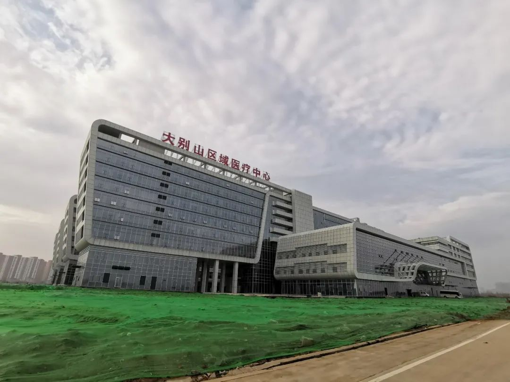
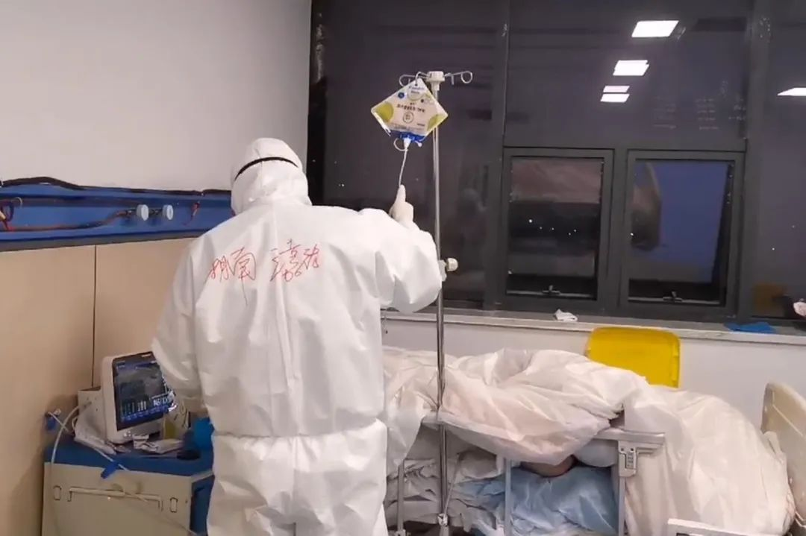
护士王嘉铭照顾危重病人，给昏迷病人进行肠道营养
我们的主战场是黄冈“小汤山”——大别山区域医疗中心，有一千张床位，收治黄冈市大部分确诊和危重病人。湖南株洲分队负责58张床位，现在只有40多位病人，已经出院了20多个，每天每个病区都是以个位数在进病人。
目前治疗的重点是重症病人，我们把重症病人集中放在一个监护室，他们通常是昏迷、气管切开，如果把轻症病人和他们放在一起，轻症也会被感染加重。专科和危重症的专家也都集中起来，负责重症监护室，降低死亡率，把愈后对身体的伤害降到最低。因为没有特效药，所以是对症治疗，配合传统中医和提高自身免疫力的药物。
多是本身就有基础性疾病，才会发展到危重。病毒的毒性正在减弱，新进来的病人以轻症为主，重症病人多是早期留下的。


教病人做呼吸操
面对轻症病人，现在我们开始做呼吸康复操和叙事护理。之前也想做，但真的没有时间，本来都延迟了下班，结束工作时已支持不住，现在可以利用下班时间来做。
呼吸操，是2018年王辰院士开始推广，可以提高肺功能，在临床，尤其对慢阻肺和长期慢性呼吸系统疾病的病人有很大的益处，缩短了他们的治疗周期。2月17号一大早，经过医疗队的详细检查和评估，很多患者都适合做呼吸操。他们非常高兴。可以下床活动的患者都加入到我们，我们鼓励患者每天至少花三分钟做。
叙事护理就是描述一件事，让病人把疾病的经过、心里的委屈都倾诉出来，帮他们解除心结。比如他觉得自己今天状态好像差了些，我们就用医学知识告诉他，病的发展就是这样的过程，也听他们讲讲自己的故事。
病人长期在隔离病房，看不到家人朋友，心里特别容易焦虑烦躁，我们教他们呼吸操和做叙事护理，也能让他们觉得不孤独。

两位护士在交接班
我们通常早上6点半起床，有班车从酒店到医院， 7点半准时出发，每次和接送的志愿者、酒店人员目光交流，都能感觉到满满的善意。
早上8点钟交接班，一个班约8小时，有早、中、晚三班。我们四小时轮换一次，4小时在病房里面，4小时在外围工作，因为在病房要穿着严密的防护服，不吃不喝不上厕所，4小时基本上汗水就浸透了，医护如果觉得憋不住尿，就会穿上尿不湿，一天下来只用一套防护服。

在临时救治点工作
工作逐渐步入正轨，刚开始我们每个人都在崩溃边缘。因为我们是第一批援助湖北医疗队，大年初一晚上11点到了黄冈，接手过3个临时救治点。
救治点病床有限，病人哭，住不进医院的人也在地上哭，医护跟着哭，哭完继续上班。印象很深的是，有一对夫妻都染病，但只有丈夫住进来了，他非常急躁，我们就用了不符合医学规定的方法，让妻子跟丈夫共用一张床，也办了住院，他们非常感激。
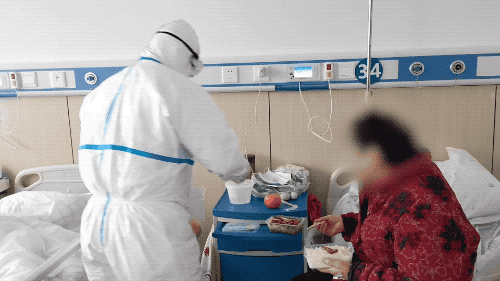
医护已经形成习惯，把自己例餐里的水果攒下来，给病人吃
物资一直是紧张，但没有刚开始那么恐怖，大年初一过来的时候，任何东西都很紧缺，卫生纸垃圾袋没有，女病人的卫生巾也没有，我们把自己带来的和酒店应急的都拿去，有什么我们都是跟病人共享。
到了现在，全国的捐赠有很多，生活用品没有问题了。防护物资还是紧缺，因为捐赠的很多达不到标准，所以还是限量领取，今天领明天的。
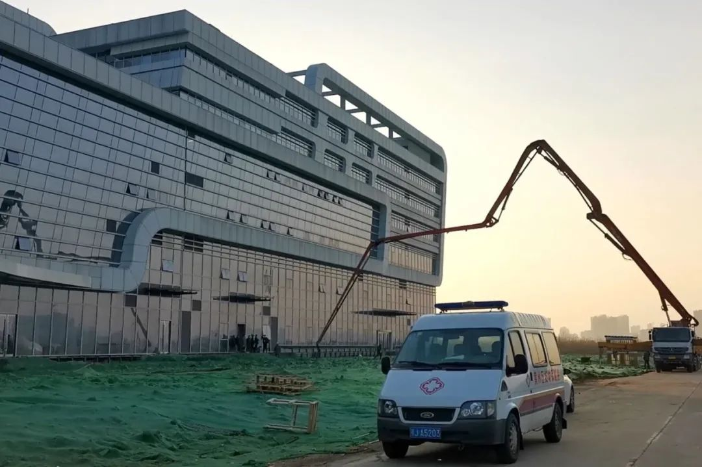大别山区域医疗中心外，每天有物资送来
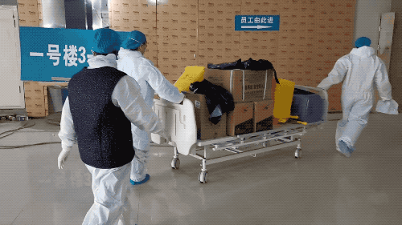
大别山区域医疗中心医护在领取物资，不少空间还是工地状态
2月2号护理组全员从临时救治点转战大别山医疗中心，医疗中心原本是5、6月份才启用，如今工人师傅加班加点赶出来交付使用，病区的物品有成千上百种，我们只有几间空空的房间，所有物品堆放在地上，每天要花大量时间找东西。
隔离病区发现没有了注射器，就用呼叫仪，让护士站送去，但很快又发现没有另一样东西，传递的次数越多，医护感染的风险越大，效率也低。

我们当时就下定决心加班，把所有的物品分成两类，隔离病房（污染区）使用和办公区（清洁区）使用。在隔离病房设立储备间，我们称为“2级库房”，免去了一趟趟传递的交叉感染风险。也设立了大输液库房、清洁物品库房和办公用品库房。
每天治疗工作的排班已经是满负荷了，我们是利用自己的休息时间来科室整理物品，其他医疗队也有人劝我们，在这里上不了多久的班，搞这么认真仔细干什么？还不如用这个时间休息一下。但整理做好之后，大家发现工作起来省时省力，顺畅了很多。

护士李锐从隔离病房出来，脱下防护服，身上已经湿透
疫情时期，根本请不到护工、保洁，以前由他们负责的卫生和生活琐碎，现在要全部由医护承担。
一个班下来，护士除了常规的治疗护理，平均要给病人打20瓶开水，要每间病房搞卫生，清理垃圾，要帮病人解决充电器、卫生纸等各种生活问题，以前在普通病房一个人能完成的事，现在要3倍的时间才能完成。穿着厚重防护服，每人每天的微信步数都是2万步以上。
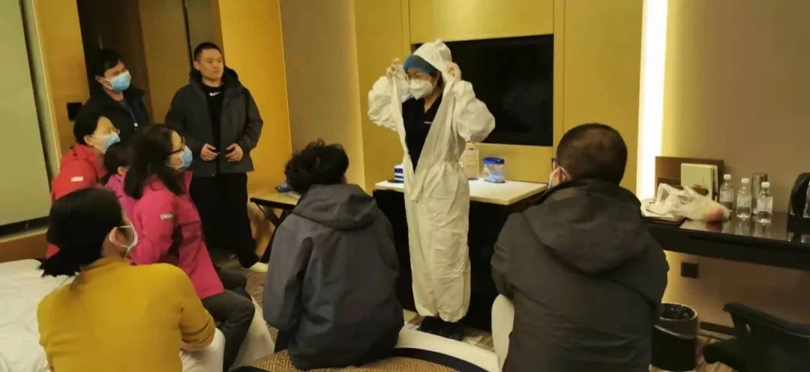
院感集中培训了一次穿防护服
我们也是第一次面对这种疾病，每天都在学习。很多人都没有穿防护服的经验。因为国家的甲类传染病才会用防护服，乙类都很少用到，这次是乙类传染病，甲类管理。平时在医院，手术衣戴个N95口罩，已经是严格防护了。
到达黄冈当晚，跟队的院感老师彭丽华集中培训了我们一次，脱防护服时，必须从里往外卷，整个过程不能碰到头部、脸部或衣服，脱完以后，防护服也要很细心地从里往外卷，要把所有的病毒都卷在里面。穿上整套衣服要10多分钟，脱下得花20多分钟。为了防止感染，我们都有自己单独的房间，之后院感老师就一个房间一个房间过，确保每一个人都学会了。

49岁的株洲市中心医院护理领队朱娟玲都是最后一个下班，因为要核对每班的诊疗单，做好记录
这么多不认识的、不同科室的人一起协作也是第一次，医生都是各个科室的主任、副主任，但大家会抛开头衔，为了新环境去协调。
株洲地区来了6个医院，99%都不认识，而且大家都穿着防护，更加难认。我们就把值班医生的名字电话都写在黑板上，在微信群里交接班，通常是第二天交班的时候，才反应过来，你就是群里的某某。我们开玩笑说，虽然同事这么久，是抗疫的战友，但是等疫情过去，见面还是不会认识。
每天都需要学习，我们医疗队的谭英征副主任是感染科的专家，也是我们病区的总住院，他每天会看最新的文献和医学动态，发在群里，然后我们再针对每个病人不同情况来讨论。

院感彭丽华，负责全队感染防控
我们株洲市中心医院15人的医疗队是零感染，有一位跟队的院感老师彭丽华，主管防控这块。
“院感”意思就是医院内感染，这是压力非常大的一块。很多病人其实是在医院内部感染加重的，医护人员也是在救助过程中感染上的，怎么降低这个感染率，就是院感老师的任务。

医疗队在龙王山救治点合影
大年初一到达黄冈之后，我们接手了几个救治点，当地的医护觉得我们比较“奇怪”，也比较严格。第一个班，是在龙王山救治点，一家老年公寓临时改造而成，输液架都不全，直接在墙上钉了钉子挂吊瓶。当地医务人员已经在陆续收诊病人，但防控做得还不够，院感彭丽华拿到当地医院的布局图，重新规划、区分污染区和清洁区，进行医院布局的施工改造。
1月29日，办公室接到电话，救治点的一位本地医生确诊感染，他是最早接触患者的医生，接完电话，几个医生沉默良久。我们当时心里特别不舒服，哭了好几次，同行之间的感触吧，他太辛苦了，工作时间太长，因为没有人顶替他；我们是第一批到达黄冈的医疗队，好多当地医生看到我们真的是眼泪都流下来了，因为已经支撑不下去了。

医护用手机和写字交流
年初五，院感接到任务，去大别山区域医疗中心进行防控指导，湖南第一批援鄂医疗队是负责该医院5楼整层楼，医院布局是合理的，有医务通道和病人通道，在办公区和病区之间有三个缓冲间，我们将其归为潜在污染1区、潜在污染2区以及缓冲区，医护人员怎么进出入病房，护士怎么配药送药接药，怎么穿脱防护服，以及哪个区域要备哪些物品，院感都仔细给出流程，物品一一罗列，生怕少了哪个环节。
护士站（清洁区）已经用玻璃封住，和隔离病区的医护即使面对面，也听不见对方讲话，交流需要用手机或者写在纸上，贴着玻璃给对方看。
院感从当地医院后勤人员那里了解到，医院是集中中央空调通风，病区和办公区共用一个机组，这样很可能会将病人呼出的病毒通过空调带入办公区。所以马上告诉后勤人员一定不要开办公区的空调，保证病房的空调，办公区用电炉烤火。
年初六晚上，收治病人之前，再次告知黄冈当地护士空气物表及地面采用什么消毒，以及消毒剂的浓度配比。等一切准备就绪，病人通宵陆续入住，所有医护穿戴防护服后互相检查，或是经过院感检查，确认合格才能进入病房。

大别山区域医疗中心，院感彭丽华承担了卫生员工作
疫情时期，根本请不到卫生员，院感老师主动承担起卫生员的工作，每天打扫厕所，拖地喷洒，配制消毒液，医疗队还开玩笑说这么高级的卫生员，肯定能保证医护人员零感染。

下班的路上，护理领队朱娟玲和护士王嘉铭，累得说不出话
在大别山区域医疗中心，刚参与了基础的布局，因为南湖救治点条件比较艰苦，我们分了一部人去南湖。护理领队朱娟玲说，我们是株洲地区最大的医院，所以我们去最艰苦的地方。
南湖医院由福利院临时改造，可收治120人，距离大别山区域医疗中心只有几分钟车程，主要是收治发热的、已做核酸检测等待结果的病人，结果阳性的转至大别山。到南湖医院门口时，也是让院感老师最先进去。院感像是排雷兵，地雷排了，安全了，后面的人再出来抗战。
当时已经有病人陆续进来，但医护通道和病人通道是共用的，而且一个院感人员也没有。我们也只能依靠福利院原有的条件分区、建通道、优化流程，每层楼争取到配一瓶快速水消。
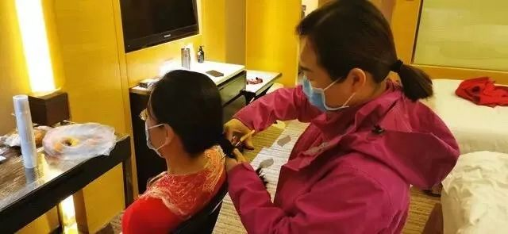
队员在酒店互相剪发

医生梁彦超剪发后
在开始工作前，院感就制定了我们怎么回房间的流程，我们所有人穿冲锋衣，方便用酒精擦拭，酒店房间外面放置了两个柜子，从外面回来，最外层衣服放在第1个污染区（柜子），用酒精喷洒，包括鞋子、鞋底这些都要喷；毛衣这一层就放在第2个柜子。
脱完毛衣，手消毒，开门后再快速手消，把包挂好，用消毒纸巾擦拭门把手，再去洗澡、洗头，必须要洗半小时以上。房间卫生我们都是自己搞，因为酒店人员也是志愿者，尽量减轻他们的负担。
为了防止感染，医疗队无论男女，在宾馆自学成才，互相剪头，虽身处疫区，但剪发气氛轻松，有人修改梁咏琪歌词唱道：我已剪短我的发，看你病毒怎么发。女医生梁彦超和家中孩子视频，1岁多的宝宝不认识短发的她了，叫她阿姨。
我们队友之间尽量是电话和微信联系，避免接触。都是在自己的房间里单独吃饭。平时工作，也保持两两检查防护服之后，再进入隔离病区的习惯，进去之后，也会不定时看对方的衣服。

株洲市中心医院给每个人准备了几箱物资
出发时，株洲市中心医院就给我们每个人准备了几箱物资，大到衣服、药品、营养品、防护用品，小到热水袋、脸盆、护手霜、指甲剪等等一应俱全，简直是搬家式援助。之后又寄来两批物资，有蛋白粉、胸腺肽，增强免疫力。
近一个月背井离乡的工作，湖南医疗队很多队友身体出现了各种各样的问题，了解到他们的需求后，我们会第一时间带着药品和设备赶到现场援助，后来大家形成习惯，一有问题就找株洲市中心医院的队友，他们那里什么都有，因为大后方给我们准备得很充分。


五大男护士
我们团队是一个特例，一般出来援助的医疗队，女护士占了90%以上，但我们医疗队9个护士，5个是男护士。
我们医院男护士在湖南省也是数量最多的，派这5位男护士来，是因为他们都从事过重症医学，郭希是重症医院副护士长，王嘉铭是重症医学的专科护士，还有两位来自手术室的护士，以前也轮训过重症医学，最小的男护士欧飞宇，94年出生，他在120院前急救中心工作，以前是重症医学科的，所以他们都有这方面的工作能力。
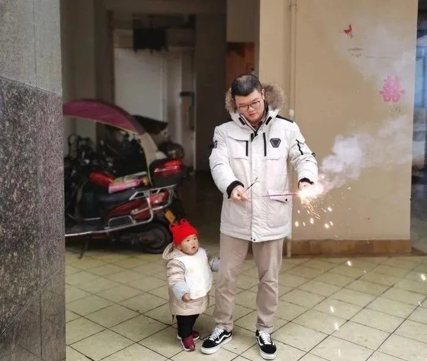
手术室护士李锐，大年初一接到医院通知下午就出发，放下电话，他立刻带着宝宝和妻子下楼买了烟花，度过最后的过年时光
医院觉得我们大老远出来，背井离乡，所以也多选择了一些男孩子，体力耐力要更好一些。男护士是一个弱势群体，我之前带过一个护士，他交的女朋友家里不同意，就因为他是一个男护士，但这次他们起到了至关重要的作用。

郭希护理重症病人，诊疗单子非常长
ICU的郭希和王嘉铭，有重症监护室的丰富经验，义不容辞地承担起危重病人的护理，帮他们翻身，经常要做一些感染危险高的气道护理等操作。护理一个气管切开的病人，风险非常高，痰液会溅到身上，他们每天为危重病人吸痰、测量生命体征，观察气道和吸氧情况，治疗非常繁重。
上完夜班之后，白天就不用上班，但他们会主动过来搞卫生。

护士李锐
护士李锐是手术室神经外科专科组长，他是情商很高特别会表达的男孩子，上班时间紧任务重，他加了病人微信，用休息时间给病人介绍病情，做健康宣教和心理护理，甚至之前南湖医院的病人，核酸检测阴性后还给他发信息告诉他结果，感谢他的鼓励。
“根据马斯洛需求的定义，很多隔离的患者不只是需要食物和治疗，也需要交流沟通。所以我工作的时候，也会对他们进行人文护理——交心！”李锐说。
南湖医院一位82岁李奶奶，因为住院仓促，把手机遗忘在家中，又记不住儿子的电话，情绪非常激动，天天闹着要出院。
李锐知道，李奶奶是对陌生的环境感到孤独无助，于是他一有时间就去和老奶奶聊天，她有两个儿子，大儿子在黄冈，在浙江当教授的小儿子更是她这辈子最大的骄傲，这次作为疑似新冠肺炎患者隔离治疗好几天了，又联系不上家人，才闹着要出院。李锐每天去跟她聊天，她不再闹着要出院，开始配合医护的治疗。
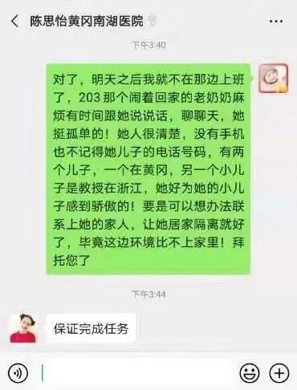
李锐托付接手的管床护士，多关注老奶奶
2月2号护理组全员转战大别山，李锐临走前特意交代接手的管床护士要多多关注老奶奶，尽早帮她和家人取得联系。来到大别山后，李锐要负责30位患者的护理，仍时常询问南湖医院护理过病患的情况。

护士邓建斌在采集咽拭子
邓建斌是手术室副护士长，他平时要管手术室100多人的排班，派他来也是因为他的统筹管理经验。他临行前再三叮嘱妻子：“父母年纪大了，就告诉他们医院临时加班，不回去过年，支援的事就不要提了。”
在龙王山救治点的第一个班，由于环境不熟悉，物品准备不齐全，乱得让人崩溃，他当晚回到酒店，凭着记忆画出病房布局图，分配区域管理，增设隔离区物资补充站，标配每个治疗车，让流程顺了起来。
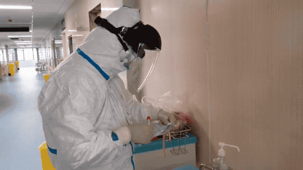
护士邓建斌一上午采集到的咽拭子数量
我们同事生病了，人力不够的时候，他一个人管两个人的病人，一天在隔离病房连续工作了10个小时，不吃不喝不上厕所，下班之后我们就问他怎么样，他说还好还好，我们都知道肯定很辛苦，一般在隔离病房只能工作4、5个小时。
邓建斌还主动承担为病人采咽拭子的工作，采集的时候，病人很容易咳嗽，是职业暴露风险很高的操作，要戴上面罩，达到三级防护。他一天要进行数十次这样的操作。
这一次，他做的事情相对是最多的。在株洲后方的同事看来，他到达黄冈后，在医院大群里报了个平安，就消失了。
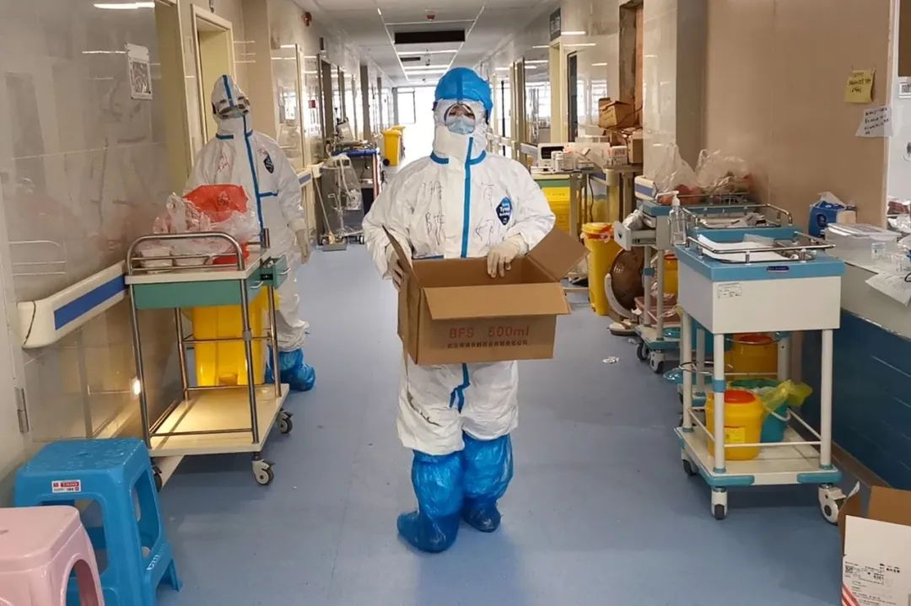
陈娜护师
我们4个女护士，也都是有相关背景，比如陈娜护师在钟南山院士团队工作过，她个子特别小，一米五多，防护服穿起来很不合身，行动费力，但也没有因为这个局限而少做事情。
生理期的时候，女性医护会用尿不湿，卫生巾肯定是不够的，再贴上暖宝宝，这样就还好。因为平时在株洲，生理期的时候我也会碰上做纤维支气管，从早上7点半工作到下午一两点，不吃不喝不上厕所，所以这方面已经有准备了。
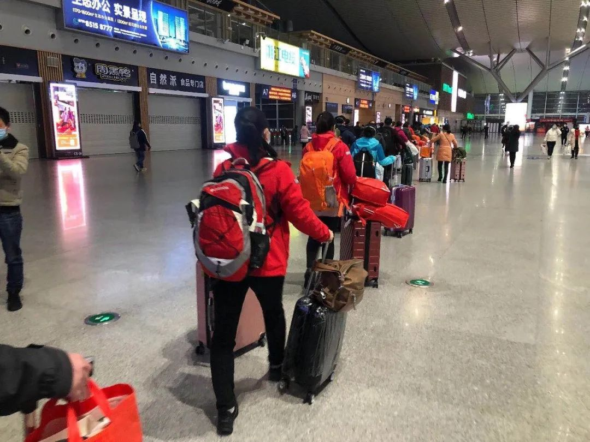
大年初一，医疗队从长沙南站出发
出来得久了，最大的问题是想家，儿子一年级，特别黏我，每天要辅导作业，爸爸妈妈年纪大了，有高血压和心脏病，大年三十，我告诉爸爸妈妈报名了支援湖北，我妈妈就哭了，说能不去吗？我说这就是我们呼吸科的问题呀。
看了赞扬我们的文章，我其实感觉有点不好意思，因为我们就是做了本职工作。我唯一期盼的就是大家平安，这场疫情赶快过去，所有的家人团圆。

株洲市中心医院15名支援湖北黄冈医疗队队员：刘毅，梁彦超，谭英征，熊佳丽，罗细萍，彭丽华，朱娟玲，谢建梅，付艳萍，邓建斌，李锐，郭希，陈娜，王嘉铭，欧飞宇。
医疗队做到“零感染”的Tips：
1、医院内区分医务通道和病人通道，区分污染区和清洁区，如果是集中中央空调通风，病区和办公区共用一个机组，那一定不要开办公区空调。
2、保证免疫力，可以吃蛋白粉、打胸腺肽。
3、明确下班后回房间的流程，房间外面放置了两个柜子，从外面回来，最外层衣服放在第1个污染区（柜子），用酒精喷洒，包括鞋子、鞋底这些都要喷；毛衣这一层就放在第2个柜子；
脱完毛衣，手消毒，开门后再快速手消，把包挂好，用消毒纸巾擦拭门把手。再去洗澡、洗头，必须要洗半小时以上。
4、队友之间尽量电话和微信联系，单独在自己房间吃饭。
5、进入隔离病区前，两两检查防护服。进去开始工作后，也不定时看队友防护服是否有问题。
特别鸣谢：刘超对此次采访的帮助
期盼支援湖北抗疫战斗的医护人员早日凯旋，平安归来🌹


▼

原文链接 备份链接 摘要：截至2月17日，全国已有3.2万余名医护人员支援湖北，支持湖北实现“应收尽收、应治尽治”。2月7日，其中一支医疗队的领队、复旦大学附属中山医院副院长朱畴文率领的136人队伍奉调入鄂，一天后接管了武汉大学人民医院东 …
原文链接 备份链接 文/六筒 李岩半年前刚去过武汉，和家人去旅游，主要想看看黄鹤楼。那还是夏天，热气蒸得人头上冒烟。高温挡不住蜂拥的游客，摩肩接踵，拥塞的车辆在大道上艰难挪动。“真是个大都市”，她想。 李岩是河北医科大学第二医院呼吸与危重 …
原文链接 [备份链接]() *************▲ *************2020年2月19日，在武汉市泰康同济医院，军队医护人员互相整理防护服。 （新华社/图） 全文共9028字，阅读大约需要20分钟。 此次派出的县级医院 …
原文链接 备份链接 澎湃新闻综合报道 新冠疫情发生以来，为了方便沟通交流，医护人员在背后写上名字，互相打气。 这些防护服上的字，如无声的誓词。 我们虽然看不见你们的脸庞，却从这些字里看到了希望。 “此行是为救治病人，不达目的不撤兵”——她 …
原文链接 备份链接 1月28日，宜昌市第一人民医院第三次派出5名护士支援新冠肺炎定点收治的机构——宜昌市第三人民医院，5位护士先后到达。 刘瀚和张禹就是本次增援团队中的两名成员。此前他们在医院微信群聊内向上级表示：“志愿报名，随叫随到”， …